This scenario will test out the features and behaviour of the null
layout manager in a java project with the SWT libraries added.
In a Java Project with the SWT library added, create a new Visual Class.
On to the canvas, drag and drop a Shell from the SWT drawer on the
palette.
Then go to the Properties view and verify
that the default Layout for the Shell is ‘Null’.
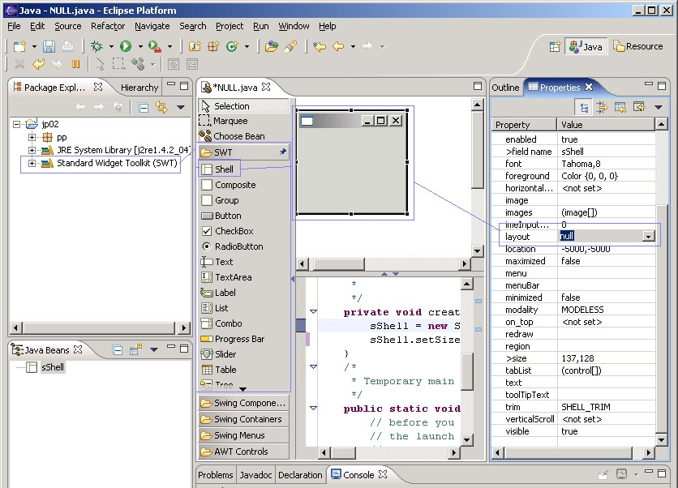
In turn draw(select, size and drop) a Button, a CheckBox,
a RadioButton, Text, TextArea,
a Label, a Combo, a Progress Bar and a Slider on to the Shell.
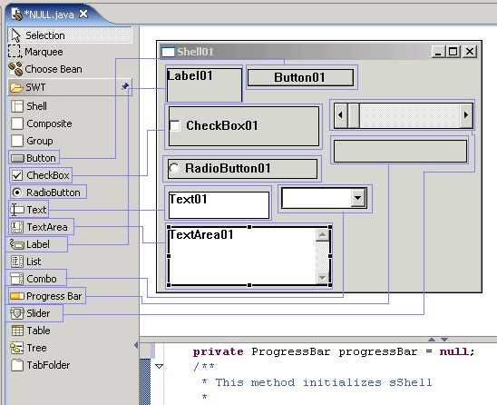
Verify that the components are drawn to
the size as selected.
In the source view, verify
for each component that “org.eclipse.swt.graphics.Rectangle”
is used to set the parameter for Bounds.
And verity that this bounds
are the same in the Properties view.
Verify that the size and location of each
component can be changed on the Shell using the mouse.
Verify that you can change the bounds in
the source, and these changes are reflected in the location and size of the
component on the Shell.
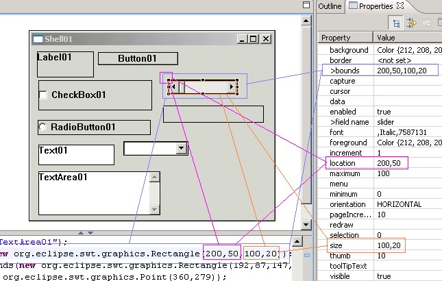
Also, verify that by changing
these values that this is also refected on the Shell.
Verify that a SWT component cannot
be dropped on to the free form.
Using the Marquee tool, verify
that all of the SWT components can be selected.
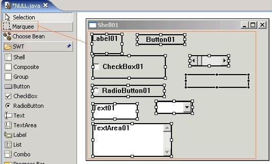
Verify that most of the components are
surrounded by white selection marks, except one which should be surrounded by
black section marks. The black selection marks indicate that this component was
the last selected.
Verify that by resizing one of the
components in the group that all the components get resized in sync.
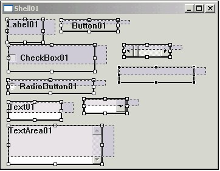 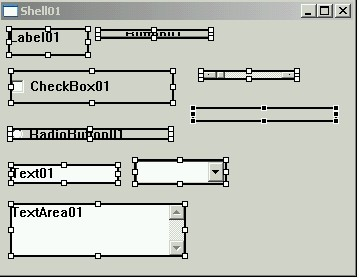
Verify that the selected components can be moved.
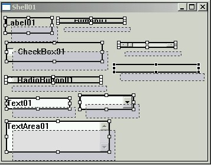 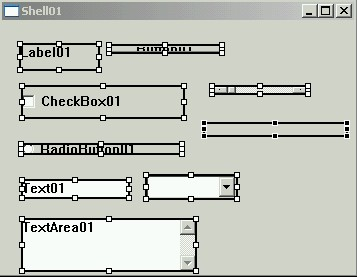
Select just a few of the SWT components, hold the CTRL key to do this,
on the Shell and bring up the ‘Customize Layout’ dialog.
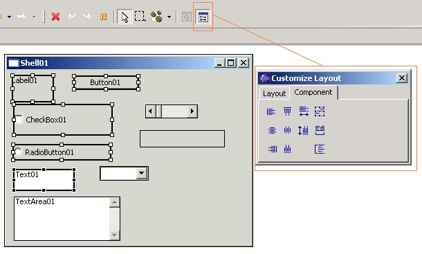
Select the ‘Align left’ button on the component tab, and verify that this send all of the
components to the left margin.
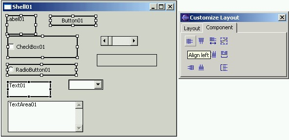 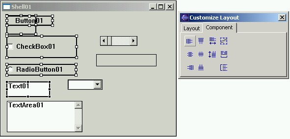
Undo this alignment, using Ctrl+Z or Edit –
Undo, and verify that the components
return to their original position.
Select the ‘Align center’ button on the component tab, and verify
that this send all of the components to the center
using the component with the black selection marks as the guide.
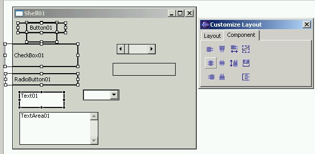
Undo this alignment, using Ctrl+Z or Edit –
Undo, and verify that the components
return to their original position.
Still holding down the Ctrl key, select another component on the right
hand side of the Shell. Then select the ‘Align
Right’ button.
Verify that the component take up a right alignment.
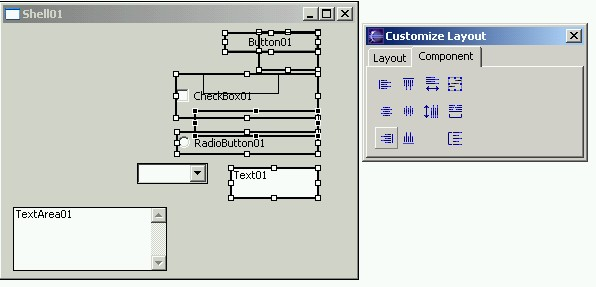
Undo this alignment, using Ctrl+Z or Edit –
Undo, and verify that the components
return to their original position.
Select the ‘Align top’ button on the component tab, and verify that this send all of the
components to the top using the component with the black selection marks as the
guide.
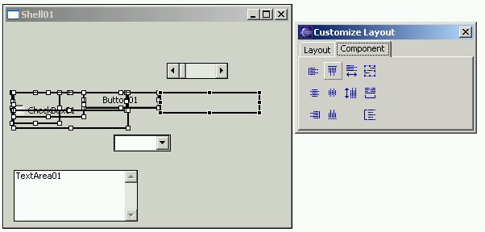
Undo this alignment, using Ctrl+Z or Edit –
Undo, and verify that the components
return to their original position.
Select the ‘Align middle’ button on the component tab, and verify that this send all of the
components to the middle using the component with the black selection marks as
the guide.
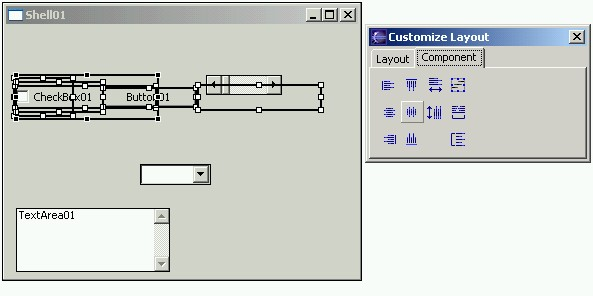
Undo this alignment, using Ctrl+Z or Edit –
Undo, and verify that the components
return to their original position.
Select the ‘Align bottom’ button on the component tab, and verify that this send all of the
components to the bottom using the component with the black selection marks as
the guide.
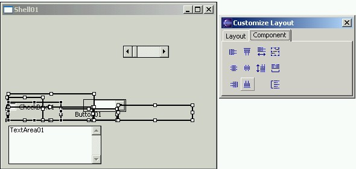
Undo this alignment, using Ctrl+Z or Edit –
Undo, and verify that the components
return to their original position.
Select the ‘Match width’ button on the component tab, and verify that this resizes all of the
components to the same width using the component with the black selection marks
as the guide.
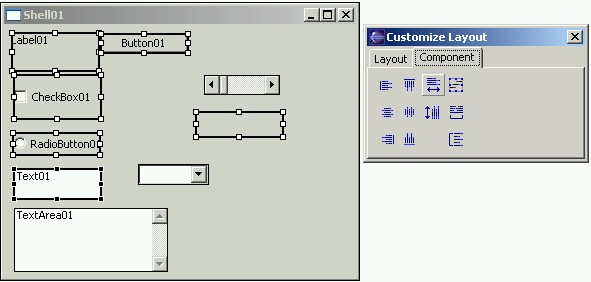
Then select the ‘Match height’ button on the component tab, and verify that this resizes all of the
components to the same height using the component with the black selection
marks as the guide.
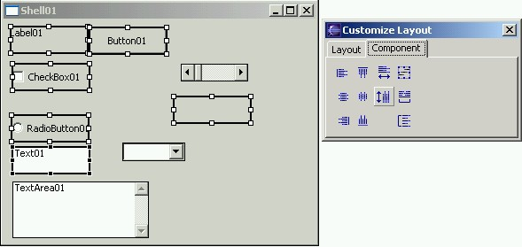
Undo this, using Ctrl+Z or Edit – Undo, and verify that the components return to
their original position.
Select the ‘Show distribution
box’ button on the
component tab, and verify that a
blue box surrounds the selected components
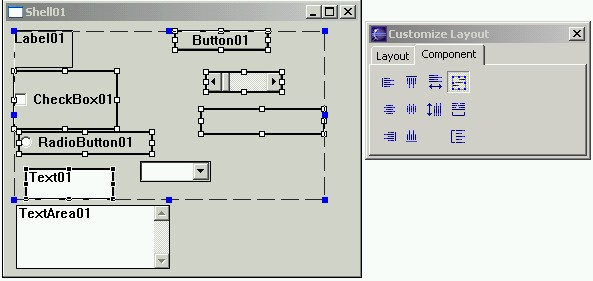
Then in turn, select the ‘Distribute
horizontally’ and
the ‘Distribute vertically’ buttons. Verify that the selected components get spaced out as expected.
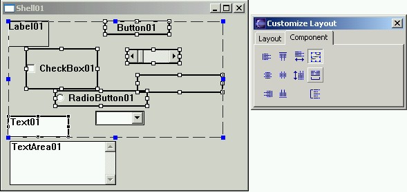 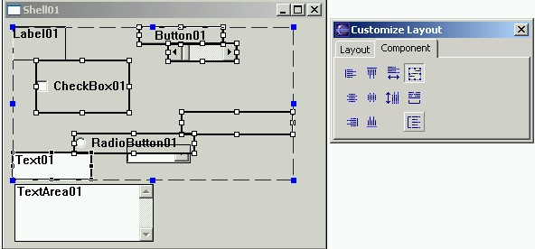
Undo this, using Ctrl+Z or Edit – Undo, and verify that the components return to
their original position.
Select the Shell and open the customize layout dialog. Select the “Layout” tab.
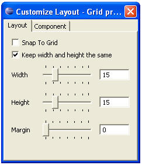
Verify that the grid can be resized and
that a margin can be applied to the Shell.
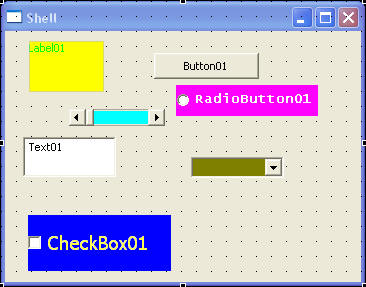
Turn on the “Snap to Grid” feature.
Move some of the components around and verify that the top left corner of the rectangle ‘highlights’ and
then ‘snaps’ to the nearest dot.
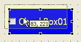 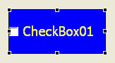
Turn off the “Snap to Grid” feature and verify that a control can be moved freely.
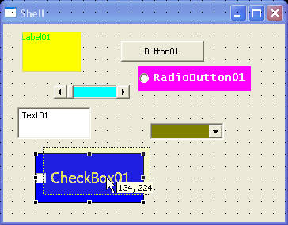
Verify that the layout of the shell can be
changed to other SWT layouts, and then verify
that this operation can be undone by selecting ‘Undo’.